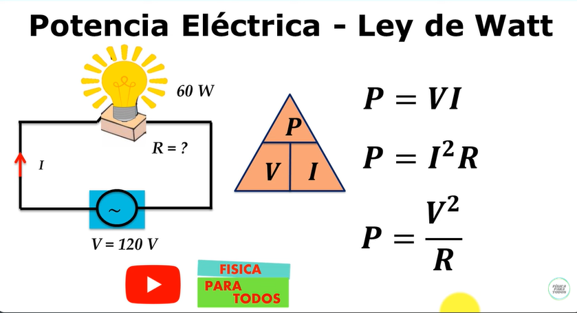

Es la tasa a la cual un dispositivo eléctrico consume o genera energía. En otras palabras, describe cuánta energía se convierte o se usa en un sistema eléctrico por unidad de tiempo. Se mide en vatios (W).
La fórmula básica de potencia eléctrica en un circuito es:
P = V × I
Donde:
Esto significa que la potencia es directamente proporcional al voltaje y la corriente. Si cualquiera de estos dos valores aumenta, la potencia también aumentará.
